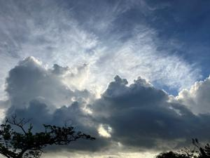
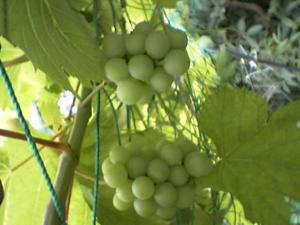

うるがいの話 ある日
最新: 『フツーに方丈記』完読【うるがいの話 ある日】とは 一日だけのプログです
『うるがいの話』の最新一日だけのプログで、通信料が少なく経済的だ。カニの画像をクリックすると全ての日付が載る『うるがいの話』サイトを表示します
|
|
【うるがいの話】 うるがい(ｳﾙｶﾞｲ urugai)とは、『もずくがに』の名前でとても大きくなります。 |
|---|---|
|
|
【カミマヤーの話】 猫のことを方言でマヤーといいます。カミマヤー（kamimayaa）とは、神の猫のことです。 |
|
【たながぁの音楽】 たながぁ（ﾀﾅｶﾞｰ tanagaa）とは手長えびのことで、何種類かあり大きいのは車 エビぐらいになります。 |

|
【ぶながぁの話】 ぶながぁ(ﾌﾞﾅｶﾞｰ bunagaa)とは、赤い髪の毛、赤い身体、そして身長は１ｍ２０ｃｍ ぐらい、川の蟹を食べているの目撃された。場所は沖縄県国頭郡大宜味村のと ある村僕の隣近所に住んでいる爺さんから、聞いた話です。 |
|
|
【ギーマの話】 ギーマ(giima)とは、山原の里山に咲くスズランに似た、 花を付けます。実は食べられます、 気が付くと口の周りが紫になっています。 |
2023年08月21日 (月）『フツーに方丈記』完読
15:05
 
２週間前に図書館から借りた本をあと2週間延長しようとしたら、大原扁理（
おおはら・へんり）『フツーに方丈記』と岸田奈美『もうあかんわ日記』が延
長不可になっている。オエー、次の予約が入っている！急いで読む。大原扁理
さんって、男性か、女性か気になっていた、ネットで写真が載っていた（男性）
。２冊に共通しているのは、家族の介護で苦労していることを書いてある。ヨ
メが、マンションから戻ってくる度に９２才の親の文句をいう、どうしようも
ないことだが、これってどうなのかとフと思ってしまう。面倒をみる家族の世
話の時間とお金が、奪われてしまう。私の母親の友達で９７才になりカジマヤ
ーを迎えた小母さんが新聞に載っていた、写真には実家の近所の９１才になる
小母さんも相変わらずイキイキとして写真に写っていた。認知症とは無縁の人
達である。『ハアア、生きてもしょうもない、早く死にたい』と会う度にヨメ
に言葉を浴びせる我儘なお義母さんを親にもつ子供（世話をする人）は苦労す
るのである。
この前の台風でジメジメしたのか、革のベルトや革ジャンなどの革製品にカビ
がはえていた、２０１３年の正月に福袋で買った革じゃんと革鞄を断捨離した
。ネットが使えない間にデジカメなどの写真を整理している（いまだに続いて
いるが）と裏の畑でできた美味しいそうなマスカットが、あった。こんなとき
もあったのかと懐かしむ。
１４時５８分 ビットコインの総資産 ￥１１、０３６（↑２）